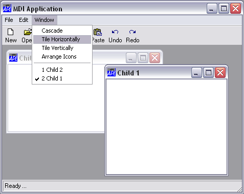

Most MDI applications incorporate a Window menu. This is a special menu that displays the captions of all open SubForms as shown below. The caption of the SubForm which currently has the focus is checked and the user can switch focus to another SubForm by selecting it from the Window menu.

The Window menu
The task of updating the Window menu with the names of the SubForms is performed for you by Dyalog APL/W. You nominate the menu to be used for this purpose by setting the MDIMenu property of the appropriate MenuBar object. For example, if your MenuBar is called F1.MB and the menu you want to use as the Window menu is called F1.MB.WM, you would type the following:
'F1.MB' ⎕WS 'MDIMenu' 'WM'
Notice that the name you specify is just the name of the menu itself, not its full pathname. If you have several MenuBars in your application, you must specify the MDIMenu property separately for each one.